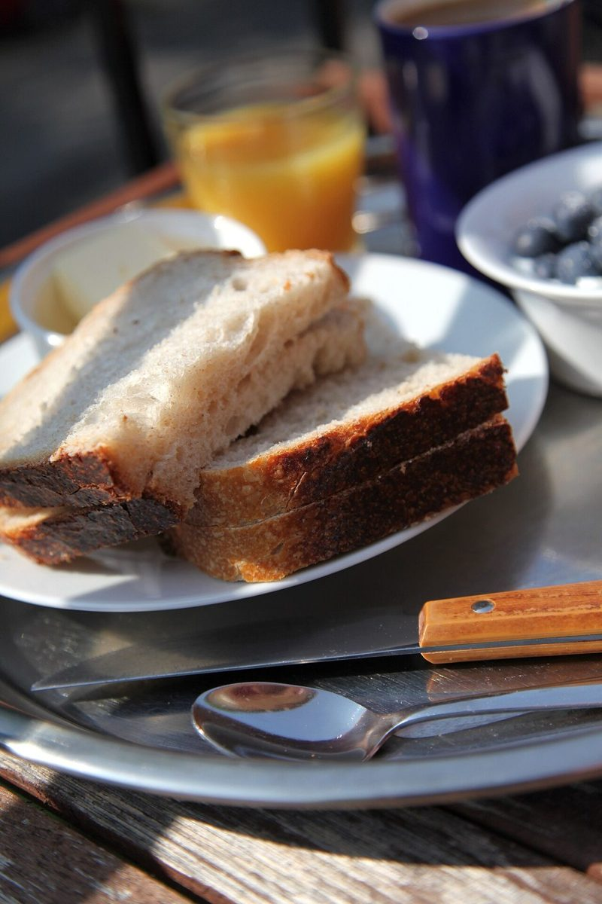

お店の由来・想い
「映えて、おいしく、食べにくい」
店名は「企業の社長が食べたいサンドイッチを作りたい」という思いから付けられたと紹介されています。コンセプトは、具をパンからあふれそうなほど挟んだ、分厚いサンドイッチ。「食べづらいけど、おいしい。」がキャッチコピーです。
- 場所: 古い町並みが残る卯之町、古民家の店舗
- 2024年11月から、古民家のイートインスペースもあります
- メニューは週替わりで、がっつり系からスイーツ系まで
上記は取材記事・運営会社ページで紹介されている内容です。

口コミ
お客様の声(イメージ例)
イメージ例
具がぎっしりで、持つとずっしり。大きな口を開けて頬張りました。
イメージ例
古民家の席でのんびり。町並みを歩いたあとのお昼にちょうどいい。
イメージ例
週替わりが楽しみで、またどんなサンドか見に行きたくなります。
創作のイメージ例で、実在のお客様の声ではありません。
アクセス
卯之町の古民家へ
- 住所: 〒797-0015 愛媛県西予市宇和町卯之町３丁目１１３
- 電話: 準備中
- 営業時間・定休日: 準備中(最新はInstagramで)
- Instagram: @syacho_sandwich